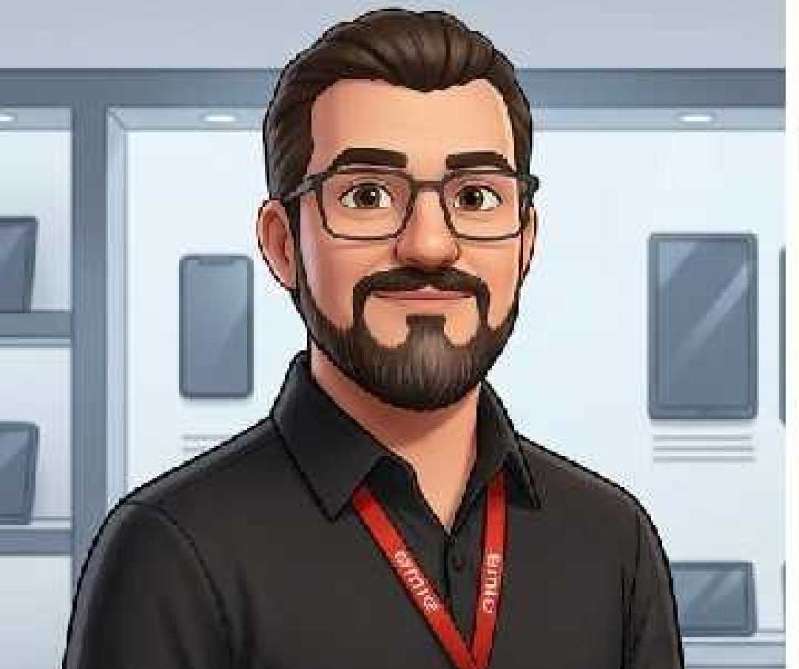
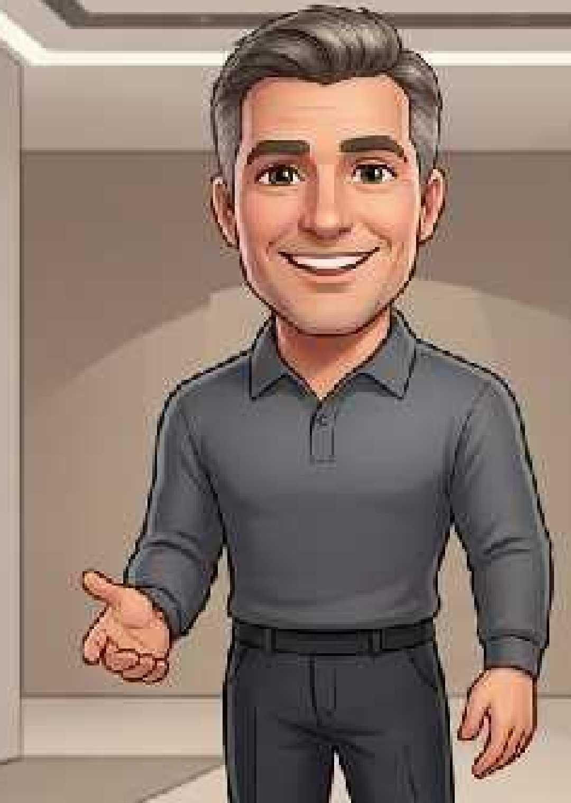

SIMULAÇÃO 1 – Promotor e Cliente
Jornada completa com UX
[ETAPA: Chegada e abordagem]
A cliente entra na loja olhando as caixas Boombox da Concorrente 1, 2 e da Aiwa. Ela tem um amigo que tem a Boombox da Concorrente 1 e ficou interessada. Recentemente ela viu a Boombox da Aiwa ao passar na frente de um quiosque na praia e foi pesquisar, então ficou muito mais interessada e está procurando para conhecer melhor e ver se já levar pra casa.

PROMOTOR (Bruno)
Opa, pode aumentar aí sem medo. Eu sou o Bruno, Promotor da AIWA. Está procurando um som?

CLIENTE (Cristiane)
Olá, estou sim. Tô dando uma olhada pois quero levar para um churrasco. Vi a "C.1" ali, mas tá salgada, mais ouvi falar muito bem da Aiwa e estava passando aqui e quando vi ela eu pensei em conhecer melhor.
[ETAPA: Identificando necessidade - UX]
PROMOTOR
Que legal eu vou te ajudar. Qual seu nome?
CLIENTE
Meu nome é Cristiane.
PROMOTOR
Prazer Cristiane. Então falando em churrasco, podemos unir autonomia, qualidade e Potência para durar até o final do churrasco. O que você acha disso?
CLIENTE
Isso mesmo que eu quero. O Churrasco deve começar umas 15h e vai até depois da janta.
[ETAPA: Conexão emocional - Nostalgia]
PROMOTOR
Pronto, você já conhecia a AIWA das antigas, aquele som 3 em 1, que tinha CDs, Toca fitas e toca discos?
CLIENTE
Sim, meu pai tem um 3 em 1 até hoje. É bom demais, e ainda está funcionando, tem um som muito bom.
PROMOTOR
É essa mesma Aiwa! Lembra da Sony, ela sempre foi referência em qualidade de Áudio e Vídeo? Então, compramos a fábrica que foi da Sony em Manaus, e hoje a Aiwa trabalha com a melhor qualidade em seus produtos. E assim estamos com a nossa Boombox superando as nossas concorrentes, é isso que vou te mostrar hoje.
[ETAPA: Demonstração sensorial]
PROMOTOR
Vou colocar uma música, olha a qualidade do som e como ele é limpo e não distorce. Coloca a mão aqui do lado, sente vibrar? São 200W RMS de verdade, e ela mantém a mesma Potência mesmo na bateria. Já as concorrentes não conseguem segurar, entregam uma Potência quando na tomada e tirando da tomada, ficando somente na bateria, eles costumam ter uma perda para economizar energia.
CLIENTE
Caramba, o grave é limpo.
CLIENTE
Gostei do som, e sobre potência, isso é muito bom e eu não sabia.
PROMOTOR
E a bateria segura até 30 horas em volume médio, o que dá para curtir seu churrasco tranquilo.
CLIENTE
Eu posso levar ela para perto da piscina e levar para praia também?
PROMOTOR
Com certeza, temos proteção IP66. Aguenta poeira e jatos de água. Pode ficar tranquilo. Imagine que alguém pulou na piscina ou derrubaram algum líquido nela, você fecha o compartimento traseiro, aí poderá molhar para limpá-la, você só não pode mergulhar ela.
[ETAPA: Teste real com celular]
PROMOTOR
Olha, ainda temos o Nosso Aplicativo Aiwa Áudio BR. Pelo app da AIWA você ainda pode dar um reforço no grave e ainda pode escolher vários equalizadores. Já salva aí no celular.
[ETAPA: Fechamento + handoff]
PROMOTOR
E aí, muito bem né. Se precisar tirar alguma dúvida pode falar, tudo bem?
CLIENTE
Gostei. Quanto tá saindo?
PROMOTOR
Essa é mais uma vantagem, ela sai bem mais barata que a C.1, com mais potência real, e ainda temos a opção de você utilizar pen-drives com músicas e ainda pode carregar seu telefone utilizando a bateria da caixa como carregador portátil. Vou chamar o vendedor para tirar o pedido para a Senhora, tudo bem, só um minuto.

VENDEDOR (Edy)
Oi, tudo bem? O Bruno me passou. Vamos fechar? Você leva ela hoje mesmo.
CLIENTE
Vamos.
[ETAPA: Pós-venda]
PROMOTOR
Parabéns pela escolha! Qualquer dúvida do app ou se precisar de algum outro produto da Aiwa, volta aqui na loja e pode procurar pelo Bruno Promotor da Aiwa.
CLIENTE
Claro, eu precisando eu volto sim, muito obrigada pelo seu atendimento.
PROMOTOR
Eu quem agradeço pela sua atenção. Vou te acompanhar até a saída, tudo bem.
CLIENTE
Obrigada, até logo.
PROMOTOR
Tchau, até logo.
Chegada
Cristiane observa as 3 Boombox. Bruno se aproxima: "Opa, pode aumentar aí sem medo..."
Cristiane observa as 3 Boombox. Bruno se aproxima: "Opa, pode aumentar aí sem medo..."
Necessidade
"Quero para churrasco das 15h até depois da janta."
"Quero para churrasco das 15h até depois da janta."
Nostalgia
Bruno lembra do 3 em 1 e da fábrica da Sony em Manaus.
Bruno lembra do 3 em 1 e da fábrica da Sony em Manaus.
Demonstração
200W RMS reais, mantém potência na bateria. IP66, 30h.
200W RMS reais, mantém potência na bateria. IP66, 30h.
Fechamento
Edy (camisa cinza) assume: "Vamos fechar? Leva hoje mesmo."
Edy (camisa cinza) assume: "Vamos fechar? Leva hoje mesmo."